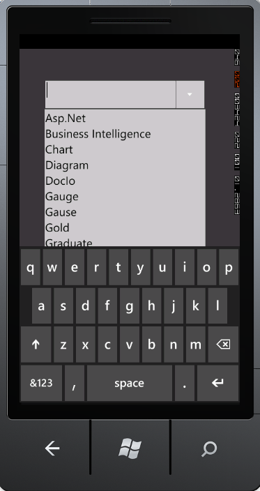
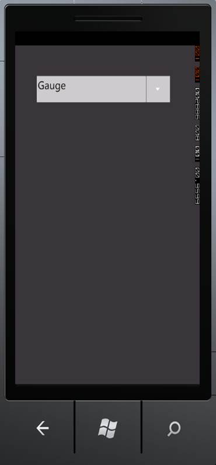

Data binding is the process of establishing a connection between the application UI and business logic. Data Binding can be unidirectional (Source -> target or target -> Source) or bidirectional (Source <-> target). You can bind data to the AutoComplete through the CustomSource property.

Figure 14.1: AutoComplete Bound with Data

Figure 14.2: AutoComplete Selected Item
Tables for Property, and Event
Properties
Table 3: Property Table for Data Binding
|
Property |
Description |
Type |
Data Type |
Reference links |
|
CustomSource |
Gets or sets the CustomSource of the AutoComplete. |
Dependency Property |
Sytem.Collections.IEnumerable |
NA |
Events
Table 4: Event Table for Data Binding
|
Event |
Description |
Arguments |
Type |
Reference links |
|
CustomSourceChanged |
When the CustomSource property value is changed, this event will be triggered. This cannot be cancelled. |
DependencyObject, DependencyPropertyChangedEventArgs |
DependencyPropertyChangedCallBack |
NA |
Sample Link
To access a Basic Core Features demo:
1. Open the Syncfusion Dashboard.
2. Click the Windows Phones drop-down list and select Explore Samples.
3. Navigate to WindowsPhoneSampleBrowser-> Tools -> AutoComplete Demo
 WCF Data
Binding
WCF Data
Binding